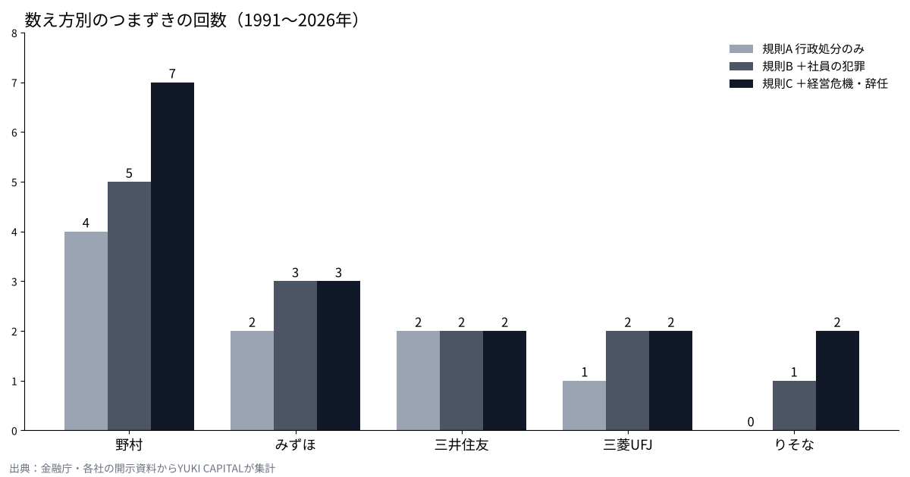
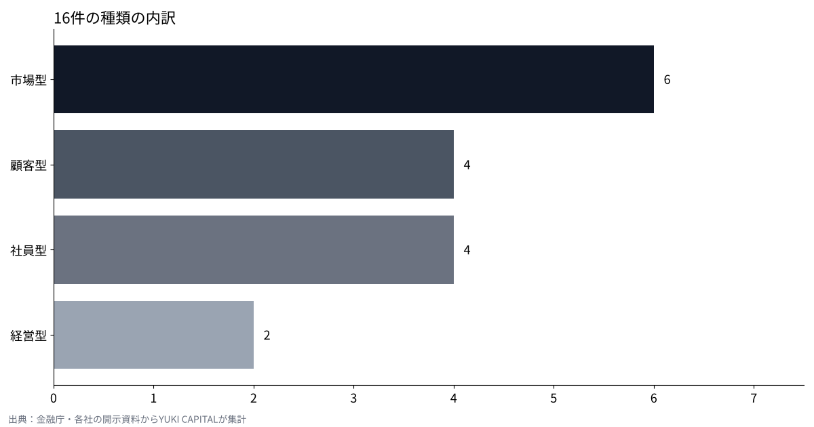

大手の銀行と証券は何度つまずいたか――りそな・三菱UFJ・三井住友・みずほ・野村の35年の不祥事と、預け先の選び方
11月17日、楽天証券は最大約1,125万口座のログインIDなどと、うち最大約447万口座の氏名・住所・年収・金融資産などが外部に漏れたおそれがあると発表した。
こうした発表のたびに「大手なら安心か」という問いが出るが、大手の銀行と証券も過去に何度も処分を受けてきた。
本稿の問いは、国内の大手5グループは1991年以降に何回つまずき、預けている側の資産はどこまで傷んだのか、そして預け先を選ぶ物差しは何か、である。

- 数え方を3通りに変えても、5グループはいずれも1回以上つまずいており、最も多い野村は4〜7回、最も少ないりそなでも0〜2回だった。
- 16件のうち、預けていた個人の資産が実際に失われたのは社員の犯罪の型の3件だけで、三菱UFJの貸金庫の件では2025年1月までに40件・約7億円を銀行が補償した。
- 2025年春にネット証券などで起きた不正アクセスは3か月で3,312件・売却506億円にのぼり、「大手かどうか」より「乗っ取られにくい仕組みか」で被害の桁が変わる。
問いと背景
不祥事とは、本稿では、法令や規則に反した行為、またはそれに準じて社会の信頼を損ねた行為を指す。行政処分とは、金融庁などが業務停止命令・業務改善命令・課徴金納付命令などで会社に是正を命じることである。
対象は、本人が預け先として使い、本稿で歴史を確かめたいと考えた5グループ、りそな・三菱UFJ・三井住友（SMBC日興証券を含む）・みずほ・野村である。期間は、証券の損失補填が表に出た1991年から2026年11月までの約35年とした。
2026年の秋は、楽天グループで情報の漏えいの発表が続いた。10月26日に楽天トラベルで最大延べ約350万件、10月31日に楽天証券のデジタル特典付き社債の購入者で延べ362件、11月17日に楽天証券で最大約1,125万口座である。ネットの窓口から大手へお金が移るかを考えるには、まず大手の側の記録を並べる必要がある。
預けている側を守る制度も確かめておく。銀行が破綻した場合、預金保険制度により、決済用でない預金は1金融機関ごとに預金者1人あたり元本1,000万円までとその利息が守られる[14]。証券会社は顧客の資産を自社の資産と分けて管理する義務があり、分別管理に違反して返せない事態が起きたときは、日本投資者保護基金が1人1,000万円まで補償する[15]。
ただし、どちらの制度も「会社がつぶれたとき」の備えである。社員の犯罪や、口座の乗っ取りによる不正な売買は、制度の補償の外で、会社の判断と体力に頼ることになる。本稿が会社ごとの過去の記録を並べるのは、この制度の外側の強さを見るためである。
データと方法
資料は、金融庁と証券取引等監視委員会の公表文、各社が開示した処分と再発防止の資料、財務省の解説論文、各社の統合報告書である[1]〜[10]。報道は年や件数の確認に使い、一次資料のない数字は使わない。
方法は2つである。1つ目は、5グループの出来事を年ごとに並べ、種類を4つに分けた。顧客に不利な売り方（顧客型）、市場の公正を損ねた行為（市場型）、社員の犯罪や不正（社員型）、システムや経営の破綻（経営型）である。
2つ目は、何を「つまずき」と数えるかで結果が変わるため、数え方を3通りに動かした。規則A＝行政処分だけ、規則B＝Aに社員の犯罪を足す、規則C＝Bに経営危機と経営陣の引責辞任を足す、である。
結果
並べた出来事は16件である。主なものを表にした。
| 年 | グループ | 出来事 | 種類 |
|---|---|---|---|
| 1991 | 野村 | 大口顧客への損失補填が発覚し、社長が引責辞任[3] | 顧客型 |
| 1995 | りそな（旧大和銀行） | ニューヨーク支店で約11億ドルの簿外損失、翌年に米国から撤退[9] | 社員型 |
| 1997 | 野村 | 総会屋への利益供与で社長が再び引責辞任[3] | 市場型 |
| 2003 | りそな | 公的資金約1兆9,600億円を注入、実質国有化[8][9] | 経営型 |
| 2006 | 三井住友 | 金利スワップの優越的地位の濫用で、販売業務の停止命令と業務改善命令[4] | 顧客型 |
| 2012 | 野村 | 公募増資の情報をめぐるインサイダーで業務改善命令[2] | 市場型 |
| 2019 | 野村 | 東証の市場区分の検討情報を外部へ伝え、業務改善命令[2] | 市場型 |
| 2021 | みずほ | 1年で8回のシステム障害、業務改善命令と外為法の是正措置命令[5] | 経営型 |
| 2022 | 三井住友（SMBC日興） | ブロックオファーの相場操縦で業務改善命令と一部業務停止[6] | 市場型 |
| 2024 | 三菱UFJ | 銀行と証券の間で顧客の非公開情報を共有し、業務改善命令[7] | 顧客型 |
| 2024 | 野村 | 長期国債先物の相場操縦で課徴金2,176万円[1] | 市場型 |
| 2024 | 三菱UFJ | 元行員による貸金庫からの窃取、2025年1月時点で40件・約7億円を補償[10] | 社員型 |
表の外に、野村の2008年の元社員のインサイダー取引[2]と2024年の元社員による顧客宅での強盗殺人未遂、みずほの2006年の個人情報の漏えいと、2016〜2019年の元行員による貸金庫からの窃取がある。
数え方を3通りに動かすと、グループごとの回数は次のようになった。

種類で分けると、市場型が6件で最も多く、社員型と顧客型が4件ずつ、経営型が2件だった。みずほの2006年の個人情報の漏えいは顧客型に数えた。

感度分析
規則Aでは、野村4回、三井住友2回、みずほ2回、三菱UFJ1回、りそな0回である。規則Bでは野村5回、みずほ3回、三井住友2回、三菱UFJ2回、りそな1回、規則Cでは野村7回、みずほ3回、三井住友2回、三菱UFJ2回、りそな2回になる。
規則によって回数の差がいちばん大きいのは野村で、AとCの間に3回の開きがある。1991年と1997年の経営陣の引責辞任を数えるかどうかの違いで、古い出来事をどこまで今の会社の評価に入れるかという判断でもある。どの規則でも野村が最も多いことは変わらない。一方で、りそなは規則Aでは0回だが、規則Cでは三井住友・三菱UFJと並ぶ。数え方しだいで「いちばん安全な大手」は入れ替わる。
回数の多さは、そのまま預けている側の損に結びつかない。野村の市場型の4件は、市場の公正さや取引先の信頼を損ねたが、個人の口座の資産を減らしたものではない。りそなの2003年も、公的資金で預金は守られた。
考察
預けている側の資産が実際に失われたのは、社員型の3件、三菱UFJとみずほの貸金庫の窃取と、野村の元社員による強盗だけである。三菱UFJは2025年1月10日時点で40件・約7億円を補償しており[10]、損は会社がかぶっている。
ネットの窓口で起きた被害は、型も桁も違う。2025年2月から4月の約3か月で、証券会社6社で不正アクセスが3,312件、不正な売却が506億円、買い付けが448億円にのぼった[11]。社員の犯罪は1件ずつ起きるが、乗っ取りは仕組みの弱いところに一度に集まる。
反対の見方もある。大手の不祥事は市場の公正さを損ねるもので、個人の損が小さくても、会社の体質の問題は同じだという見方である。野村は1991年と1997年に同じ型の問題で社長が辞め、2012年と2019年にも情報の扱いで命令を受けた[2][3]。SMBC日興も、2009年に三井住友の傘下に入ってから4度目の行政処分だった[13]。
では、預ける側は何を物差しにすればよいか。表の16件から逆算すると、見るべき点は3つに絞れる。1つ目は、起きたときに補償できる体力で、自己資本や利益の大きさで測れる。2つ目は、社員の不正を早く見つける仕組みで、貸金庫の事件のあと全国銀行協会が規定のひな型を改め、現金の格納を禁じた例がある[16]。3つ目は、乗っ取りを止める仕組みで、ネットの窓口を閉じて電話と書面で確かめる設定ができるかである。
本稿には限界がある。数えたのは公表された事案だけで、表に出ていない不正は含まない。5グループに絞ったため、ネット証券や他の大手との比較もしていない。答え合わせの基準は、楽天証券の件で補償がどこまで及ぶか、今回の情報を使った詐欺がどれだけ起きるかである。補償が広く行き渡り、二次被害が少なければ、ネットの窓口との差は小さいと言える。
結論
5グループは、数え方を変えてもいずれも1回以上つまずいていた。大手であることは、不祥事が起きないことを意味しない。
ただし、個人の資産が失われた型は社員の犯罪に限られ、補償が明らかな事案では会社が損をかぶっている。預け先を選ぶ物差しは、不祥事の回数より、起きたときに補償できる体力と、乗っ取りを止める仕組みがあるかに置くほうが、預ける側の損に近い。
僕はこう見ている
僕の会社のメインの銀行はりそなで、付き合いがあるから選んでいる。銀行と証券会社を選ぶときにいちばん見ているのは、規模が大きいか、業界でナンバーワンかどうか、それから付き合いがあるかどうかだ。
楽天証券は使っていない。個人のネット証券はSBI証券で、使いやすいから選んだが、大きな金額では売買しない。法人の資産を置く野村では、注文は電話とメールでしか通らないようにしている。大手も漏れるときは漏れるが、電話とメールを必須にしておけば乗っ取りは起こりにくいと僕は見ている。今回のような発表を見ると、大手で良かったと思う。
参考文献
- 金融庁・野村證券「野村證券に対する金融庁による課徴金納付命令について」2024年10月31日 https://www.nomuraholdings.com/jp/news/nr/holdings/20241031/20241031.pdf
- 金融庁「野村證券株式会社及び野村ホールディングス株式会社に対する行政処分について」2019年5月28日 https://www.fsa.go.jp/news/30/shouken/20190528-2.html
- 野村ホールディングス「野村證券に対する金融庁による行政処分について」2012年8月3日 https://www.nomuraholdings.com/jp/news/nr/holdings/20120803/20120803.pdf
- 三井住友フィナンシャルグループ「株式会社三井住友銀行に対する行政処分について」2006年4月27日 https://www.smfg.co.jp/news/pdf/j20060427_01.pdf
- みずほフィナンシャルグループ・みずほ銀行「金融庁および財務省による行政処分について」2021年11月26日 https://www2.jpx.co.jp/disc/84110/140120211125441559.pdf
- 日本格付研究所「SMBC日興証券に行政処分」2022年10月7日 https://www.jcr.co.jp/download/7e75970c7184df511b2d5a7db74b8724497a4e271bc27a2dca/22d0853.pdf
- 三菱UFJフィナンシャル・グループほか「金融庁による行政処分について」2024年6月24日 https://www2.jpx.co.jp/disc/83060/140120240624535223.pdf
- 服部孝洋「我が国における公的資金注入および一時国有化スキーム」『ファイナンス』2023年4月号（財務省） https://www.mof.go.jp/public_relations/finance/202304/202304i.pdf
- りそなホールディングス「統合報告書2024」 https://kitaishihon.com/company/8308/ir-library/10295/download
- 三菱UFJ銀行「元行員の不祥事に関する対応状況・再発防止策等について」2025年1月16日 https://www.bk.mufg.jp/news/admin/news0116.pdf
- ライフハッカー・ジャパン（金融庁の集計の引用）2025年4月 https://www.lifehacker.jp/article/2504-how-to-prevent-fishing-fraud/
- 証券取引等監視委員会「野村證券株式会社による長期国債先物に係る相場操縦に対する課徴金納付命令の勧告について」2024年9月25日 https://www.fsa.go.jp/sesc/news/c_2024/2024/20240925-1.html
- 時事通信「信頼回復へいばらの道＝再発防止、4回目―SMBC日興」2022年11月5日 https://www.sbbit.jp/article/refers/98762
- 預金保険機構「預金保険制度の解説」 https://www.dic.go.jp/yokinsha/page_000105.html
- 日本投資者保護基金「補償対象となる顧客資産」 https://www.jipf.or.jp/
- ビジネス+IT「三菱UFJとみずほで起きた貸金庫窃盗事件、改正点とは」2025年7月18日 https://www.sbbit.jp/article/fj/168229
図・イラストはYUKI CAPITALが作成
日々の数字と判断は、Xで記録している。